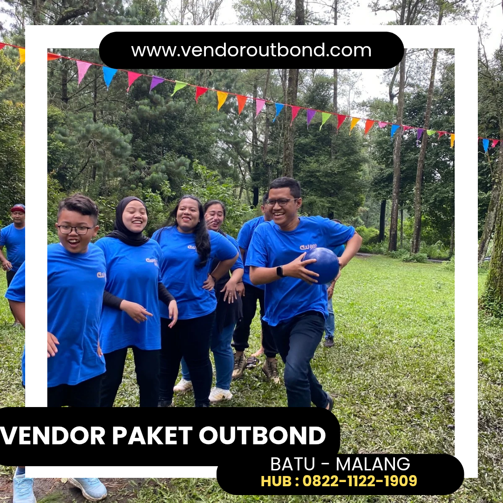
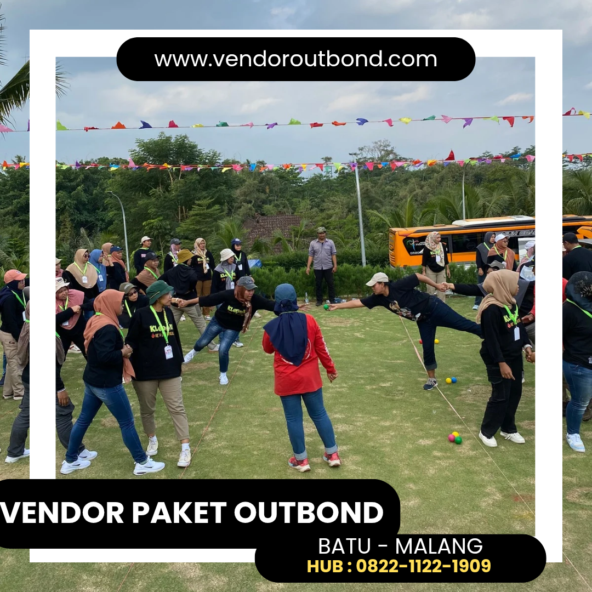
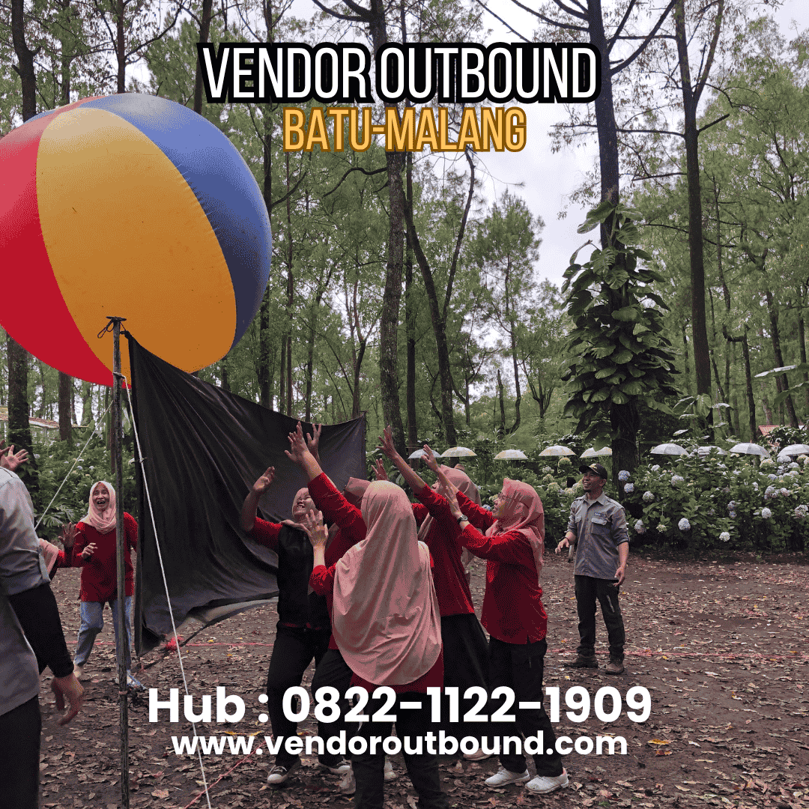

Memilih program outbound training yang tepat adalah keputusan strategis yang tidak boleh dilakukan secara sembarangan. Di pasaran saat ini, terdapat ratusan bahkan ribuan penyedia jasa outbound training dengan berbagai klaim dan penawaran yang tampak menarik di permukaan. Tanpa panduan yang tepat dan terstruktur, perusahaan Anda bisa saja membuang investasi besar untuk program yang tidak memberikan dampak nyata pada pengembangan SDM — sebuah kerugian yang tidak hanya bersifat finansial, tetapi juga dapat mempengaruhi motivasi dan kepercayaan karyawan terhadap program pelatihan di masa mendatang.
Artikel komprehensif ini hadir sebagai panduan bagi para profesional HR dan manajemen perusahaan dalam memilih program outbound training yang benar-benar sesuai dengan kebutuhan, tujuan, dan budget organisasi. Dengan mengikuti tujuh tips yang akan dibahas secara mendalam, Anda akan lebih percaya diri dalam membuat keputusan yang tepat dan memastikan bahwa setiap rupiah yang diinvestasikan memberikan return yang signifikan dan dapat dibuktikan kepada seluruh pemangku kepentingan perusahaan.
1. Tentukan Tujuan dan Kebutuhan Spesifik Perusahaan
Langkah pertama dan terpenting sebelum memilih program outbound training adalah mendefinisikan dengan jelas dan terukur apa yang ingin Anda capai. Pertanyaan yang perlu dijawab: Apakah tujuan utamanya adalah meningkatkan kekompakan tim yang baru terbentuk? Meningkatkan motivasi karyawan yang sedang mengalami penurunan semangat kerja? Mengembangkan kemampuan kepemimpinan untuk kader manajer masa depan? Atau merayakan pencapaian perusahaan sekaligus mempererat hubungan lintas departemen yang selama ini kurang sinergis?
Setiap tujuan yang berbeda membutuhkan pendekatan, desain program, dan jenis aktivitas yang berbeda pula. Program outbound yang dirancang untuk tim penjualan (sales) yang perlu meningkatkan semangat kompetitif dan orientasi target akan sangat berbeda dengan program untuk tim kreatif yang membutuhkan stimulasi inovasi, fleksibilitas berpikir, dan keterbukaan terhadap perspektif baru. Buatlah daftar prioritas kebutuhan SDM Anda, ranking-kan berdasarkan tingkat urgensitas, dan gunakan ini sebagai kompas dalam setiap diskusi dengan calon penyedia jasa outbound training.
Lakukan Analisis Kebutuhan SDM Terlebih Dahulu
Sebelum menghubungi vendor, lakukan survey singkat atau Focus Group Discussion (FGD) dengan perwakilan karyawan dari berbagai level hierarki dan departemen. Identifikasi isu-isu yang paling sering muncul dan paling dirasakan dampaknya: apakah konflik antar tim yang menghambat proyek, kurangnya inisiatif dan ownership, komunikasi yang tersumbat di berbagai level, atau kurangnya kreativitas dan keberanian untuk mencoba pendekatan baru? Data riset lapangan ini akan menjadi dasar yang kuat dan objektif untuk menentukan program outbound training yang paling relevan dan tepat sasaran bagi organisasi Anda.
2. Evaluasi Rekam Jejak dan Kredibilitas Vendor Secara Teliti
Tidak semua penyedia jasa outbound training diciptakan setara. Perbedaan kualitas antar vendor bisa sangat signifikan — mulai dari kompetensi dan pengalaman fasilitator, standar keamanan aktivitas, kualitas desain program yang ditawarkan, hingga kemampuan vendor dalam memberikan sesi debriefing yang bermakna dan mendalam. Berikut adalah beberapa aspek yang perlu Anda evaluasi secara menyeluruh.
Portofolio dan Pengalaman Klien: Minta vendor untuk menunjukkan portofolio klien mereka secara transparan dan detail. Vendor yang berpengalaman akan dengan percaya diri menampilkan daftar perusahaan yang pernah mereka layani, termasuk dari berbagai industri dan skala perusahaan — dari perusahaan lokal hingga multinasional. Semakin beragam pengalaman mereka, semakin besar kemungkinan mereka dapat merancang program yang sesuai dengan keunikan dan kebutuhan spesifik perusahaan Anda.
Kualifikasi dan Sertifikasi Fasilitator: Tanyakan secara detail latar belakang pendidikan, sertifikasi profesional, dan pengalaman fasilitator yang akan memimpin program Anda. Fasilitator yang kompeten harus memiliki pemahaman mendalam tentang psikologi kelompok, teknik fasilitasi experiential learning, dan kemampuan debriefing yang kuat dan terstruktur. Berapa tahun pengalaman lapangan mereka? Apakah mereka memiliki sertifikasi dari lembaga nasional atau internasional yang diakui di bidangnya?
"Program outbound training yang baik bukan dinilai dari seberapa seru dan menegangkan aktivitasnya, melainkan dari seberapa dalam dan relevan pembelajaran yang berhasil ditransfer ke kehidupan dan pekerjaan nyata peserta setelah program selesai." — Ahmad, Senior Training Consultant
3. Pastikan Program Dapat Dikustomisasi Sesuai Kebutuhan
Setiap perusahaan memiliki budaya organisasi, nilai inti, tantangan spesifik, dan kebutuhan yang unik satu sama lain. Program outbound training yang efektif bukanlah program paket standar "one size fits all" yang sama persis untuk semua klien tanpa penyesuaian, melainkan program yang dirancang khusus (fully customized) sesuai dengan karakteristik spesifik perusahaan Anda. Vendor yang profesional akan selalu meluangkan waktu yang cukup untuk benar-benar memahami organisasi Anda sebelum mulai merancang program.
Diskusikan dengan calon vendor: apakah mereka bersedia melakukan needs assessment secara mendalam sebelum program? Apakah aktivitas dapat dimodifikasi sesuai kondisi fisik peserta yang beragam? Apakah tema, narasi, dan metafora dalam setiap aktivitas dapat diselaraskan dengan nilai-nilai inti dan budaya spesifik perusahaan Anda? Semakin fleksibel dan adaptif vendor dalam mengakomodasi kebutuhan spesifik Anda tanpa mengorbankan kualitas, semakin besar kemungkinan program akan memberikan dampak yang relevan dan bermakna.

4. Pertimbangkan Lokasi dan Kelengkapan Fasilitas
Lokasi outbound training memiliki dampak besar dan langsung terhadap kualitas pengalaman seluruh peserta. Pilihlah lokasi yang memiliki setting alam yang indah, segar, dan mendukung — suasana pegunungan yang sejuk, pinggiran sungai yang asri, atau kawasan hutan yang hijau akan secara alami menciptakan atmosfer segar yang kontras dengan rutinitas kantor yang serba digital dan indoor.
Namun, keindahan bukan satu-satunya pertimbangan yang penting. Pastikan juga lokasi tersebut memiliki fasilitas keselamatan yang memadai dan terawat, termasuk perlengkapan P3K yang lengkap, jalur evakuasi yang jelas dan terdokumentasi, dan staf medis atau paramedis yang terlatih dan siap siaga. Aksesibilitas lokasi juga menjadi pertimbangan penting — lokasi yang terlalu jauh atau sulit dijangkau dapat menambah kelelahan fisik dan mental peserta serta mengurangi antusiasme sebelum program bahkan dimulai.
5. Utamakan Standar Keamanan yang Ketat dan Tidak Kompromi
Keselamatan adalah prioritas mutlak yang tidak dapat dikompromikan dalam setiap program outbound training. Aktivitas outdoor yang melibatkan tantangan fisik seperti high ropes course, flying fox, atau water crossing harus dilaksanakan dengan standar keselamatan yang ketat dan terdokumentasi dengan baik. Jangan pernah berkompromi soal keamanan hanya demi menghemat biaya atau karena tergiur harga yang terlalu murah.
Tanyakan vendor secara langsung dan detail tentang protokol keselamatan standar mereka, kondisi dan sertifikasi peralatan yang digunakan (kapan terakhir diinspeksi?), rasio fasilitator terhadap peserta dalam aktivitas berisiko tinggi (idealnya 1:8 atau lebih ketat), serta prosedur darurat yang dimiliki. Vendor yang benar-benar profesional akan dengan senang hati, terbuka, dan transparan menjawab semua pertanyaan keselamatan ini tanpa merasa tersinggung atau defensif.
6. Kelola Budget dengan Cerdas dan Proyeksikan ROI
Outbound training adalah sebuah investasi strategis, bukan pengeluaran operasional biasa yang harus diminimalkan. Namun demikian, pengelolaan budget yang bijaksana tetap sangat diperlukan agar investasi dapat memberikan nilai optimal. Hindari memilih vendor termurah tanpa mempertimbangkan kualitas secara menyeluruh, tetapi juga jangan otomatis berasumsi bahwa harga tertinggi selalu menjamin kualitas terbaik.
Mintalah proposal tertulis yang detail dari setidaknya 3 vendor berbeda dan bandingkan secara apple-to-apple: apa saja yang termasuk dalam paket harga, berapa rasio fasilitator terhadap peserta, apa saja materi dan aktivitas yang ditawarkan, bagaimana mekanisme evaluasi program, dan apa saja layanan tambahan yang disediakan. Proyeksikan juga ROI yang dapat diharapkan: peningkatan produktivitas tim, penurunan turnover yang menghemat biaya rekrutmen, dan perbaikan iklim kerja yang berdampak pada peningkatan kualitas output.

7. Pastikan Ada Sistem Evaluasi Pasca Program yang Terstruktur
Program outbound training yang benar-benar profesional tidak berakhir saat peserta meninggalkan lokasi dan pulang ke rumah masing-masing. Vendor berkualitas akan menyediakan laporan evaluasi komprehensif yang mencakup observasi perilaku peserta selama program berlangsung, penilaian pencapaian tujuan yang telah disepakati, temuan-temuan penting tentang dinamika tim, rekomendasi pengembangan lanjutan, serta langkah-langkah konkret yang dapat diambil perusahaan untuk mempertahankan dan memperkuat dampak positif program dalam jangka panjang.
Tanyakan juga apakah vendor menyediakan layanan pendukung pasca program seperti sesi coaching individual atau tim lanjutan, webinar refresher untuk memperkuat pembelajaran, atau asesmen ulang setelah 3–6 bulan untuk mengukur keberlanjutan dampak program. Sustainabilitas dampak program jangka panjang adalah indikator kualitas vendor yang sesungguhnya — bukan sekadar seberapa seru program selama berlangsung.
Kesimpulan
Memilih program outbound training yang tepat adalah proses yang memerlukan riset yang teliti, evaluasi mendalam terhadap berbagai faktor kunci, dan dialog yang intensif dan terbuka dengan calon vendor. Tujuh tips yang telah dibahas secara komprehensif dalam artikel ini — mulai dari mendefinisikan tujuan yang spesifik dan terukur, mengevaluasi rekam jejak vendor secara mendalam, memastikan kustomisasi program, memilih lokasi yang tepat dan aman, mengutamakan standar keselamatan yang ketat, mengelola budget secara cerdas, hingga memastikan sistem evaluasi pasca program yang terstruktur — adalah kerangka kerja komprehensif yang akan membantu Anda membuat keputusan yang tepat, terinformasi, dan dapat dipertanggungjawabkan.
Ingatlah: program outbound training yang sukses bukan hanya tentang kesenangan sesaat di hari pelaksanaan, tetapi tentang transformasi nyata yang dapat dirasakan dalam dinamika kerja tim Anda sehari-hari di bulan-bulan setelah program selesai. Dengan memilih partner yang tepat dan program yang dirancang dengan baik dan penuh dedikasi, investasi SDM Anda akan memberikan return yang berlipat ganda dalam jangka panjang.